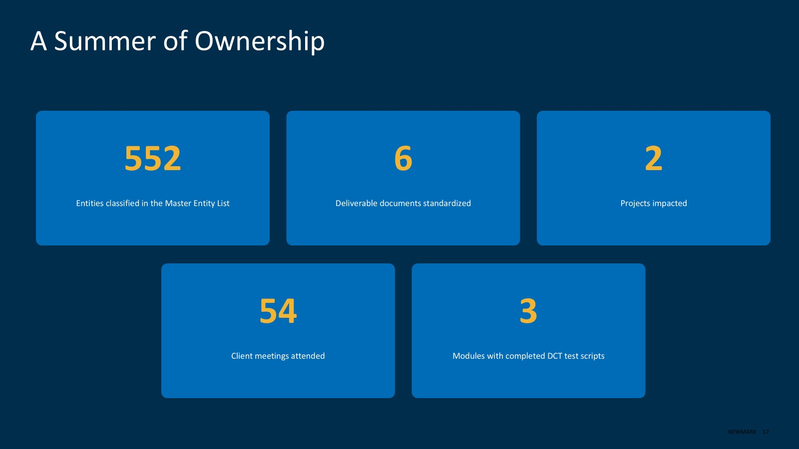
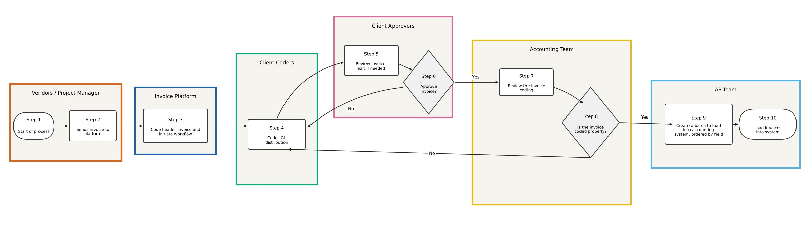

Consulting · Internship · Summer 2026
Management Consulting Internship
Management consulting work in real estate, where the quality of the underlying data decided whether anything built on it could be trusted.
- Firm
- Newmark (formerly RealFoundations)
- Role
- Management consulting intern
- Timeline
- May to August 2026
- Client
- Commercial real estate owner and operator
- Team
- Project sponsor, project manager, three analysts and me
- Setting
- Remote, with visits to the Dallas office
- Focus
- Data integrity, testing and process tooling

The engagement
A commercial real estate owner and operator with a large, multi-entity property portfolio had outgrown its real estate accounting platform. The configuration was aging, it no longer matched the complexity of the company’s ownership structure, and it could not keep pace with newer technology. Newmark served as implementation partner for a ground-up rebuild, bringing platform configuration expertise, data conversion and ownership analysis, business process redesign and a testing methodology. The target go-live was January 2027.
I was staffed onto the project at the very start, during discovery, which is not always the case for interns, so I saw the engagement from its first meetings rather than joining near the end. The team was a project sponsor, a project manager, three analysts and me.
My role
I worked remotely, with a couple of trips to Newmark’s Dallas office to meet the team. I met weekly with the project manager and every other week with the project sponsor, and in the weeks I did not meet the sponsor I met with a senior leader of the firm. Because the project was in discovery, roughly 60 to 80 percent of my time was client-facing.
I attended 54 client meetings as a participant, then worked through the transcripts to send summaries and due-outs to the team and the client. As the project moved along, the project manager asked me to take on some project management tasks to lighten his load, including maintaining the testing tracker the team reviewed twice a week.

Untangling the ownership structure
The hardest and most important part of the summer was understanding how the client’s entities actually owned one another. The entity list had duplicate entries, inconsistent names and missing identifiers, and some ownership percentages did not add up to 100 percent.
I built the working copy of the Master Entity List, 552 entities in all. Each entity received a standardized five-digit ID built on portfolio-prefix logic and was classified by system grouping, deal structure and asset class. Standardizing early mattered because adding or removing entities later would have been much harder without it. I verified the list against the client’s hierarchy diagram and documented four data quality issues for the team to resolve with the client. I also traced a problem of numbers stored as text, which was breaking lookup formulas across thousands of rows, to its source and corrected it systematically instead of cell by cell.
I then mapped 43,642 ownership paths from a 6,982-row export into a five-sheet lookup tool with data-quality flags, and worked with a teammate to bring the fragmented records together in an interactive explorer for the full hierarchy. The client had been operating with almost nothing comparable, so it gave them their first unified view of how the portfolio fits together. I checked the results both by spot-checking individual records and by reconciling totals. The central lesson was that ownership spread across several paths needs deduplication logic, not simple aggregation.
Preparing the new system for testing
Before go-live, users need to confirm that the new system looks the way they expect and that they can move through it. Those checks are User Acceptance Testing (UAT) and Design Confirmation Testing (DCT). I wrote the DCT test scripts for three modules, Accounts Payable, Commercial Management and General Ledger, as formula-linked workbooks, each verified against the source design, and built a consolidated summary workbook that rolls up progress across all three. The scripts also validated data conversion accuracy ahead of the planned January 2027 go-live.
I also maintained the testing progress tracker, with status roll-ups, charts and a one-click refresh, and the team reviewed it at each of its two weekly meetings. Both the project team and the client’s testers used the workbooks. I finished my internship before testing began, so I can speak to how the scripts were built rather than to what they found.
Tools and standards for the firm
Process diagrams on the engagement had always been built by hand in Microsoft Visio, which was slow. At the project manager’s request, another analyst and I co-developed an Excel workbook and standard operating procedure that turn structured process steps into Mermaid.js syntax, a plain-English summary and a swimlane diagram. It is now in use on a second project the same manager leads. I also converted six deliverable documents, among them the design workbooks, the integration strategy plan and the process flow narratives, to the firm’s standard templates so they were ready for the client.

The outcome
The client responded very positively to the team’s feedback, and the project remains on track for its January 2027 go-live. Newmark gave me very positive feedback on the internship. This fall Newmark traveled to OU to pitch the firm and its internship program to MBA students ahead of recruiting for summer 2027, and I joined them to speak about my summer.
What I took away
Three lessons shaped how I approach consulting work. Large system implementations depend on data quality, and clean inputs upstream save enormous rework once configuration and testing begin. Client trust comes from being precise and open about data problems rather than smoothing over them. And the value of the work is not only technical configuration: it is translating a client’s operational complexity into a system that reflects how the business actually runs.
The internship also gave me real ownership early, with client-facing work and direct contact with stakeholders from the first discovery meetings, which made it a genuine trial run for a consulting career.